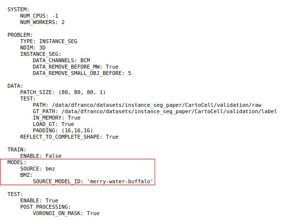
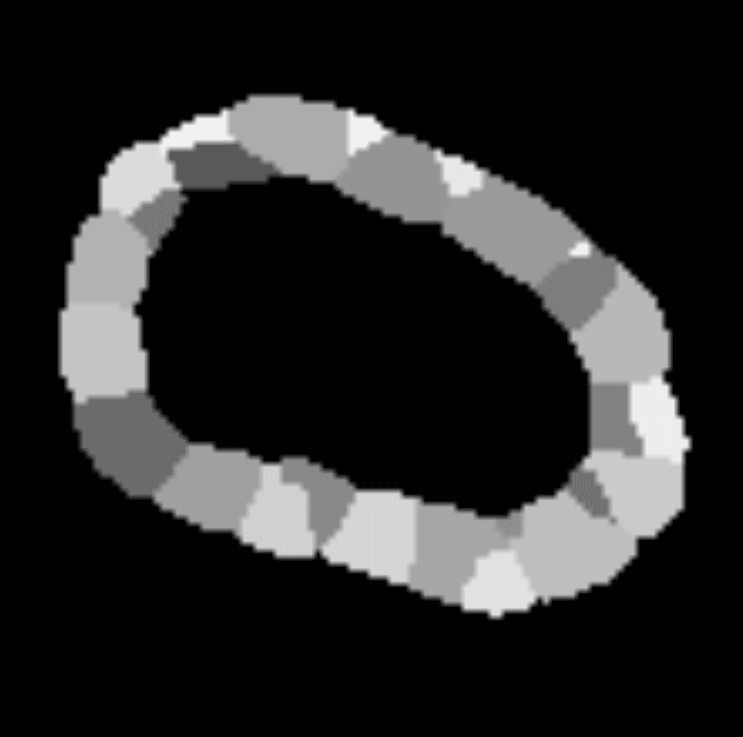
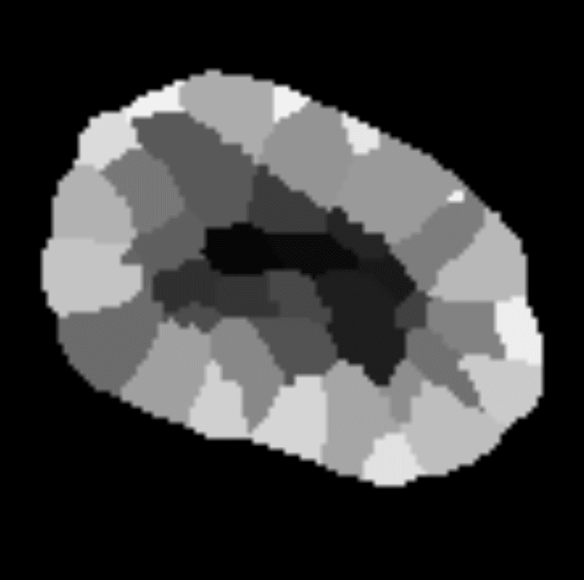
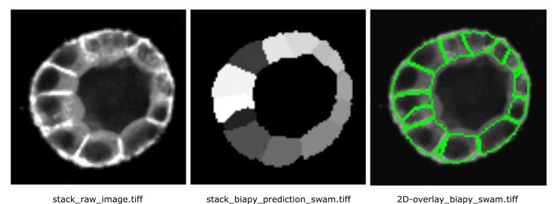
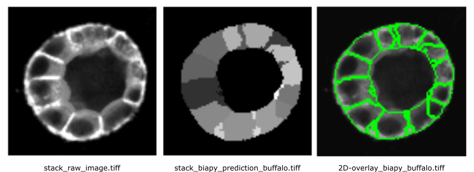

Execute a BiaPy workflow in Galaxy
| Author(s) |
|
| Reviewers |
|
OverviewQuestions:
Objectives:
What is BiaPy and how does it streamline deep learning workflows for bioimage analysis?
How can we make Deep Learning (DL) models accessible to a broader audience?
How can I execute a BiaPy pipeline directly within the Galaxy platform?
How do I utilize pre-trained models from the BioImage.IO repository to perform inference on image data?
Requirements:
Learn to configure and run a BiaPy workflow by editing a YAML file to define hardware settings, data paths, and model selection.
Execute an inference workflow in Galaxy using two different pre-trained models sourced from BioImage.IO.
- Introduction to Galaxy Analyses
- tutorial Hands-on: FAIR Bioimage Metadata
- tutorial Hands-on: REMBI - Recommended Metadata for Biological Images – metadata guidelines for bioimaging data
Time estimation: 2 hoursLevel: Intermediate IntermediateSupporting Materials:Published: Feb 11, 2026Last modification: Feb 17, 2026License: Tutorial Content is licensed under Creative Commons Attribution 4.0 International License. The GTN Framework is licensed under MITpurl PURL: https://gxy.io/GTN:T00571version Revision: 2
The application of supervised and unsupervised Deep Learning (DL) methods in bioimage analysis have been constantly increasing in biomedical research in the last decades (Esteva et al. 2021). DL algorithms allow automatically classifying complex biological structures by learning complex patterns and features directly from large-scale imaging data, medical scans, or high-throughput biological datasets (Franco-Barranco et al. 2025). Furthermore, trained models can be easily shared on online repositories (e.g., BioImage.IO) to be reused by other scientists and support open science.
However, running DL models often requires high-level programming skills which can often be a barrier to general audience especially the one without a proper computational background. Additionally, many DL models require GPU acceleration, which is not always accessible to all researchers. Such obstacles might limit the practical and routine adoption of DL models in bioimaging.
So, how to make DL models accessible to a larger audience? Well, BiaPy is an open source framework that streamlines the use of common deep-learning workflows for a large variety of bioimage analysis tasks, including 2D and 3D semantic segmentation, instance segmentation, object detection, image denoising, single image super-resolution, self-supervised learning (for model pretraining), image classification and image-to-image translation.
In this training, you will learn how to execute a BiaPy workflow directly in Galaxy by running inference on a set of images using two pre-trained models from BioImage.IO defined in a BiaPy YAML configuration file. In particular, we will execute the CartoCell pipeline a high-content pipeline for 3D image analysis, unveils cell morphology patterns in epithelia (Andres-San Roman et al. 2023).

Open image in new tabYou will perform a comparative analysis of the segmentation performance of two models from BioImage.IO, namely venomous-swan and merry-water-buffalo. Both model can perform cyst segmentation for fluorescence microscopy images and have the same 3D U-Net + Residual Blocks base architecture. However, venomous-swan enhances the 3D Residual U-Net with Squeeze-and-Excitation (SE) blocks.
Our goal is to check if whether the inclusion of SE blocks in the venomous-swan model leads to improved segmentation accuracy compared to the merry-water-buffalo model. This comparison will help us understand the impact of the SE blocks on the model’s ability to segment cysts in fluorescence microscopy images.
Finally, we will assess the models using various metrics as well as a qualitative assessments of the segmentation masks will be conducted to visually inspect the differences in segmentation quality between the two models.
Let’s start with BiaPy!
AgendaIn this tutorial, we will deal with:
Getting test data and the BiaPy YAML configuration file
The dataset required for this tutorial is available from Zenodo. The CartoCell dataset contains whole epithelial cysts acquired at low resolution with minimal human intervention (more information). The dataset is divided into test, train and validation data, each folder containing images and associated segmentation masks.
In order to simplify the upload, we already prepared the test images and YAML files in the Data Library that you can access on the left panel in Galaxy.
As an alternative to uploading the data from a URL or your computer, the files may also have been made available from a shared data library:
- Go into Libraries (left panel)
- Navigate to the correct folder as indicated by your instructor.
- On most Galaxies tutorial data will be provided in a folder named GTN - Material –> Topic Name -> Tutorial Name.
- Select the desired files
- Click on Add to History galaxy-dropdown near the top and select as Datasets from the dropdown menu
In the pop-up window, choose
- “Select history”: the history you want to import the data to (or create a new one)
- Click on Import
After importing the data from the Data Library, you should have the following files in your history:
01_raw_image.tiff01_raw_mask.tiff02_raw_image.tiff02_raw_mask.tiffconf_cartocell_swam.yamlconf_cartocell_buffalo.yaml
Run inference using the BioImage.IO pre-trained model
Now we can set up the BiaPy tool with the ‘venomous-swam’ model which is defined in conf_cartocell_swam.yaml
Hands On: Configure the BiaPy Tool with 'venomous-swam'
- Build a workflow with BiaPy ( Galaxy version 3.6.5+galaxy0) with the following parameters to extract metadata from the image:
Do you have a configuration file? :
Yes, I have one and I want to run BiaPy directlySelect a configuration file:
conf_cartocell_swam.yamlSelect the model checkpoint (if needed) : Leave it blank. A checkpoint is a local file containing the trained model weights (e.g. .safetensors/.pth). In this tutorial we load a pre-trained model from the BioImage Model Zoo (BioImage.IO), so no local checkpoint file is required.
In the test data section, select the raw images to run predictions on and the ground truth/target images to evaluate those predictions. If no target data is provided, evaluation metrics will not be computed. Make sure the files are in the same order so each raw image is paired with its corresponding target image.
Specify the test raw images:
01_raw_image.tiffand02_raw_image.tiffSpecify the test ground truth/target images:
01_raw_mask.tiffand02_raw_mask.tiffOn Select output check the boxes:
- param-check
Test predictions (if exist)- param-check
Post-processed test predictions (if exist)- param-check
Evaluation metrics (if exist, on test data)
Once the tool finishes running, you will have three different datasets in your history.
1. Test predictions: Full-size output images produced by the model on the test set. Because the model predicts small, overlapping patches, these patch outputs are merged back together to form one prediction per original image.

Open image in new tab2. Post-Processed Test Prediction: Test predictions after automatic “clean-up” steps defined in the configuration. These steps can refine the raw output (for example, removing small spurious regions or separating touching objects). In the YAML file definition, Voronoi tessellation is automatically applied to ensure that all instances touch each other.

Open image in new tab3. Test metrics: Numerical scores that measure how well the predictions match the ground truth (if provided). In instance segmentation, the report typically includes:
-
Intersection Over Union (IoU) per output channel (how well pixel regions overlap). This metric, also referred as the Jaccard index, is essentially a method to quantify the percent of overlap between the target mask and the prediction output.
-
Matching metrics (how well individual predicted objects match true objects), shown for raw predictions and post-processed predictions.
…but you can find more info on the test metrics in BiaPy documentation!
Visualize the results
As first step, we can visualize one slice of the segmentation on the original image. We will work with 02_raw_image.tiff
Hands On: Extract 2D results from the BiaPy output
- Extract Dataset with the following parameters:
- Input List: ‘“Build a workflow with BiaPy on dataset 2, 3, and others: Post-processed test predictions”’
- How should a dataset be selected?:
- Select by Index
- Element index:
1Rename galaxy-pencil the dataset to
biapy_prediction_swam.tiff- Convert image format ( Galaxy version 6.7.0+galaxy3) with the following parameters:
- param-file “Input Image”:
biapy_prediction_swam.tiff- “Extract series”:
All series- “Extract timepoint”:
All timepoints- “Extract channel”:
All channels- “Extract z-slice”:
Extract z-slice
- “Z-slice id”
22- “Extract range”:
All images- “Extract crop”:
Full image- “Tile image”:
No tiling- “Pyramid image”:
No PyramidRename galaxy-pencil the dataset to
stack_biapy_prediction_swam.tiff- Convert image format ( Galaxy version 6.7.0+galaxy3) with the following parameters:
- param-file “Input Image”:
01_raw_image.tiff- “Extract series”:
All series- “Extract timepoint”:
All timepoints- “Extract channel”:
All channels- “Extract z-slice”:
Extract z-slice
- “Z-slice id”
22- “Extract range”:
All images- “Extract crop”:
Full image- “Tile image”:
No tiling- “Pyramid image”:
No PyramidRename galaxy-pencil the dataset to
stack_raw_image.tiff- Overlay images ( Galaxy version 0.0.4+galaxy4) with the following parameters to convert the image to PNG:
- “Type of the overlay”:
Segmentation contours over image- param-file “Intensity image”:
stack_raw_image.tifffile- param-file “Label map”:
stack_biapy_prediction_swam.tifffile (output of Convert binary image to label map ( Galaxy version 0.5+galaxy0))- “Contour thickness”:
1- “Contour color”:
green- “Show labels”:
no- Rename galaxy-pencil the dataset to
2D-overlay_biapy_swam.tiff
The segmentation results for the 22th z-stack are shown below:

Open image in new tabWe can also do better and visualize the full 3D segmentation using the LibCarna tool in Galaxy!
Hands On: Visual 3D
- Render 3-D image data ( Galaxy version 0.2.0+galaxy2) with the following parameters:
- param-file “Input image (3-D)”:
01_raw_image.tiff- “Unit of the intensity values”:
No unit- “Coordinate system”:
Point Y to the Top- “Rendering mode”:
Maximum Intensity Projection (MIP)- “Color map”:
gist_gray- “Camera parameters”:
- “Distance”:
100- “Render mask overlay”:
- param-file “Mask overlay (3-D) “:
biapy_prediction_swam.tiff- “Video parameters”:
- “Frames”:
400
Pretty cool, eh?
We can do the same for also for 02_raw_image.tiff:
Compare different pre-trained models
Let’s now run the BiaPy tool again but this time with the ‘merry-water-buffalo’ model:
Hands On: Configure the BiaPy Tool for 'merry-water-buffalo'
- Build a workflow with BiaPy ( Galaxy version 3.6.5+galaxy0) with the following parameters to extract metadata from the image:
Do you have a configuration file? :
Yes, I have one and I want to run BiaPy directlySelect a configuration file:
conf_cartocell_buffalo.yamlSelect the model checkpoint (if needed) : Leave it blank. We will load the pre-trained model directly from the BioImage.IO, so no checkpoint file is required.
In the test data section, select the raw images to run predictions on and the ground truth/target images to evaluate those predictions. If no target data is provided, evaluation metrics will not be computed. Make sure the files are in the same order so each raw image is paired with its corresponding target image.
Specify the test raw images:
01_raw_image.tiffand02_raw_image.tiffSpecify the test ground truth/target images:
01_raw_mask.tiffand02_raw_mask.tiffOn Select output check the boxes:
- param-check
Test predictions (if exist)- param-check
Post-processed test predictions (if exist)- param-check
Evaluation metrics (if exist, on test data)
We can visualize again the results using the previous approach:
Hands On: Extract the results from the BiaPy output
- Extract Dataset with the following parameters:
- Input List: ‘“Build a workflow with BiaPy on dataset 2, 3, and others: Post-processed test predictions”’
- How should a dataset be selected?:
- Select by Index
- Element index:
1Rename galaxy-pencil the dataset to
biapy_prediction_buffalo.tiff- Convert image format ( Galaxy version 6.7.0+galaxy3) with the following parameters:
- param-file “Input Image”:
biapy_prediction_buffalo.tiff- “Extract series”:
All series- “Extract timepoint”:
All timepoints- “Extract channel”:
All channels- “Extract z-slice”:
Extract z-slice
- “Z-slice id”
22- “Extract range”:
All images- “Extract crop”:
Full image- “Tile image”:
No tiling- “Pyramid image”:
No PyramidRename galaxy-pencil the dataset to
stack_biapy_prediction_buffalo.tiff- Convert image format ( Galaxy version 6.7.0+galaxy3) with the following parameters:
- param-file “Input Image”:
01_raw_image.tiff- “Extract series”:
All series- “Extract timepoint”:
All timepoints- “Extract channel”:
All channels- “Extract z-slice”:
Extract z-slice
- “Z-slice id”
22- “Extract range”:
All images- “Extract crop”:
Full image- “Tile image”:
No tiling- “Pyramid image”:
No PyramidRename galaxy-pencil the dataset to
stack_raw_image.tiff- Overlay images ( Galaxy version 0.0.4+galaxy4) with the following parameters to convert the image to PNG:
- “Type of the overlay”:
Segmentation contours over image- param-file “Intensity image”:
stack_raw_image.tifffile- param-file “Label map”:
stack_biapy_prediction_buffalo.tifffile (output of Convert binary image to label map ( Galaxy version 0.5+galaxy0))- “Contour thickness”:
1- “Contour color”:
green- “Show labels”:
no- Rename galaxy-pencil the dataset to
2D-overlay_biapy_buffalo.tiff
Results will look like this:

Open image in new tabFrom a visual inspection of the results, the ‘venomous-swam’ model appears to produce sharper contours and more clearly defined cells, whereas ‘merry-water-buffalo’ seems better at capturing cells with fewer merges. However, its segmentation is slightly noisier.
It is hard to say that a prediction is better than other by just looking at a slice when working in 3D!
The Test metrics will give us a better overview on which model is performing better!
‘venomous-swam’ struggles mainly with missing objects (low recall)
Let’s evaluate segmentation at a IoU ≥ 0.5, a moderate and not-too-strict matching threshold:
Precision: 0.328
Recall: 0.171
F1: 0.222
PQ: 0.157
water-buffalo is clearly stronger at instance detection and segmentation
At a commonly used matching threshold (IoU ≥ 0.5), averaged across the 2 test images:
Precision: 0.761
Recall: 0.631
F1: 0.689
PQ: 0.473
So Water-buffalo is better both in:
- finding objects (higher recall),
- keeping predictions correct (higher precision).
Conclusions
In this tutorial, you executed BiaPy inference pipelines directly in Galaxy using YAML configuration files, and compared two pre-trained BioImage.IO models on the same 3D dataset.
You learned how to:
- Run BiaPy in “configuration-file driven” mode, which makes analyses easier to reproduce and share
- Load pre-trained BioImage.IO models without providing a local checkpoint
- Inspect results both as a 2D slice overlay and as a 3D rendering
- Use the evaluation metrics to compare models objectively rather than relying on visual inspection alone
In our example, the two models showed different strengths: one produced cleaner contours in a slice view, while the other achieved stronger quantitative performance (higher object-level matching metrics at common IoU thresholds). This illustrates why combining qualitative visualization with quantitative scoring is important when selecting a model.
Where to go next
- Edit the YAML to test different post-processing settings (e.g., instance separation parameters)
- Run inference on additional images or your own data (keeping image/mask pairing consistent)
- Try other BioImage.IO models and compare them using the same workflow and plots
Optional: Extract complete training workflow from history
As an optional step, you can extract a complete workflow from your Galaxy history. This allows you to save and reuse the entire training process as a reproducible and shareable workflow.
Clean up your history: remove any failed (red) jobs from your history by clicking on the galaxy-delete button.
This will make the creation of the workflow easier.
Click on galaxy-gear (History options) at the top of your history panel and select Extract workflow.
The central panel will show the content of the history in reverse order (oldest on top), and you will be able to choose which steps to include in the workflow.
Replace the Workflow name to something more descriptive.
Rename each workflow input in the boxes at the top of the second column.
If there are any steps that shouldn’t be included in the workflow, you can uncheck them in the first column of boxes.
Click on the Create Workflow button near the top.
You will get a message that the workflow was created.

You've Finished the Tutorial
Key points
BiaPy is an open-source tool designed to lower the technical barriers for using DL in bioimage analysis.
In Galaxy, BiaPy can run BioImage.IO pre-trained models and provides task-aware pre/post-processing (e.g. instance segmentation decoding) and summary statistics—beyond raw model predictions.
The BiaPy pipeline can be controlled via a YAML configuration file, which specifies the task type and model source.
Frequently Asked Questions
Have questions about this tutorial? Have a look at the available FAQ pages and support channelsUseful literature
Further information, including links to documentation and original publications, regarding the tools, analysis techniques and the interpretation of results described in this tutorial can be found here.
References
- Esteva, A., K. Chou, S. Yeung, N. Naik, A. Madani et al., 2021 Deep learning-enabled medical computer vision. NPJ digital medicine 4: 5. https://www.nature.com/articles/s41746-020-00376-2
- Andres-San Roman, J. A., C. Gordillo-Vazquez, D. Franco-Barranco, L. Morato, C. H. Fernández-Espartero et al., 2023 CartoCell, a high-content pipeline for 3D image analysis, unveils cell morphology patterns in epithelia. Cell Reports Methods 3: https://www.cell.com/cell-reports-methods/fulltext/S2667-2375(23)00249-7
- Franco-Barranco, D., J. A. Andrés-San Román, I. Hidalgo-Cenalmor, L. Backová, A. González-Marfil et al., 2025 BiaPy: Accessible deep learning on bioimages. Nature Methods 1–3. https://www.nature.com/articles/s41592-025-02699-y
Feedback
Did you use this material as an instructor? Feel free to give us feedback on how it went.
Did you use this material as a learner or student? Click the form below to leave feedback.

Citing this Tutorial
- Riccardo Massei, Daniel Franco Barranco, Execute a BiaPy workflow in Galaxy (Galaxy Training Materials). https://training.galaxyproject.org/training-material/topics/imaging/tutorials/biapy/tutorial.html Online; accessed TODAY
- Hiltemann, Saskia, Rasche, Helena et al., 2023 Galaxy Training: A Powerful Framework for Teaching! PLOS Computational Biology 10.1371/journal.pcbi.1010752
- Batut et al., 2018 Community-Driven Data Analysis Training for Biology Cell Systems 10.1016/j.cels.2018.05.012
Congratulations on successfully completing this tutorial!@misc{imaging-biapy, author = "Riccardo Massei and Daniel Franco Barranco", title = "Execute a BiaPy workflow in Galaxy (Galaxy Training Materials)", year = "", month = "", day = "", url = "\url{https://training.galaxyproject.org/training-material/topics/imaging/tutorials/biapy/tutorial.html}", note = "[Online; accessed TODAY]" } @article{Hiltemann_2023, doi = {10.1371/journal.pcbi.1010752}, url = {https://doi.org/10.1371%2Fjournal.pcbi.1010752}, year = 2023, month = {jan}, publisher = {Public Library of Science ({PLoS})}, volume = {19}, number = {1}, pages = {e1010752}, author = {Saskia Hiltemann and Helena Rasche and Simon Gladman and Hans-Rudolf Hotz and Delphine Larivi{\`{e}}re and Daniel Blankenberg and Pratik D. Jagtap and Thomas Wollmann and Anthony Bretaudeau and Nadia Gou{\'{e}} and Timothy J. Griffin and Coline Royaux and Yvan Le Bras and Subina Mehta and Anna Syme and Frederik Coppens and Bert Droesbeke and Nicola Soranzo and Wendi Bacon and Fotis Psomopoulos and Crist{\'{o}}bal Gallardo-Alba and John Davis and Melanie Christine Föll and Matthias Fahrner and Maria A. Doyle and Beatriz Serrano-Solano and Anne Claire Fouilloux and Peter van Heusden and Wolfgang Maier and Dave Clements and Florian Heyl and Björn Grüning and B{\'{e}}r{\'{e}}nice Batut and}, editor = {Francis Ouellette}, title = {Galaxy Training: A powerful framework for teaching!}, journal = {PLoS Comput Biol} }
You can use Ephemeris's
shed-tools installcommand to install the tools used in this tutorial.shed-tools install [-g GALAXY] [-a API_KEY] -t <(curl https://training.galaxyproject.org/training-material/api/topics/imaging/tutorials/biapy/tutorial.json | jq .admin_install_yaml -r)Alternatively you can copy and paste the following YAML
--- install_tool_dependencies: true install_repository_dependencies: true install_resolver_dependencies: true tools: - name: bfconvert owner: imgteam revisions: fcadded98e61 tool_panel_section_label: Imaging tool_shed_url: https://toolshed.g2.bx.psu.edu/ - name: binary2labelimage owner: imgteam revisions: 984358e43242 tool_panel_section_label: Imaging tool_shed_url: https://toolshed.g2.bx.psu.edu/ - name: libcarna_render owner: imgteam revisions: 8fa86f0ebca2 tool_panel_section_label: Imaging tool_shed_url: https://toolshed.g2.bx.psu.edu/ - name: overlay_images owner: imgteam revisions: ca362a9bfa20 tool_panel_section_label: Imaging tool_shed_url: https://toolshed.g2.bx.psu.edu/ - name: biapy owner: iuc revisions: e434d9b9cd13 tool_panel_section_label: Imaging tool_shed_url: https://toolshed.g2.bx.psu.edu/ - name: biapy owner: iuc revisions: 8dab52928e70 tool_panel_section_label: Imaging tool_shed_url: https://toolshed.g2.bx.psu.edu/